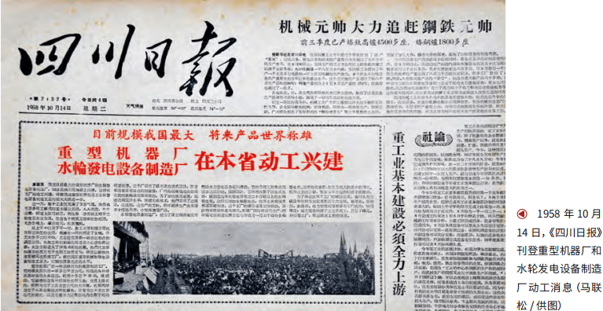
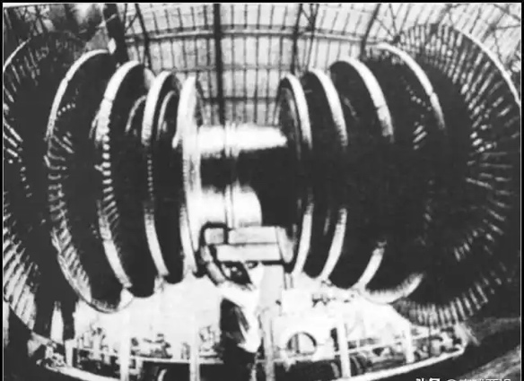
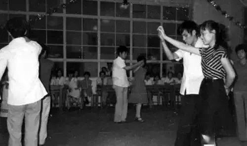
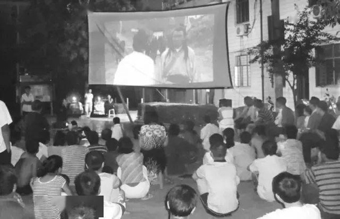
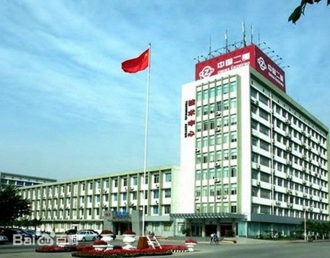
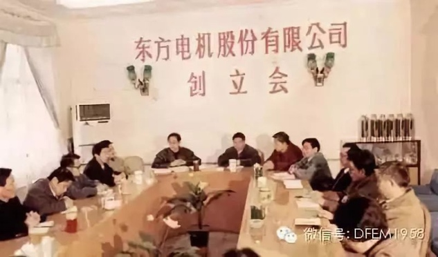
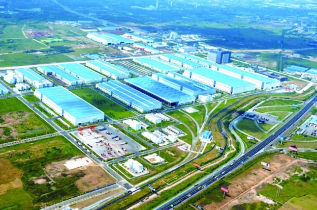

浅谈三线建设参与者群体的时代印记与现实反思
——以德阳三线建设史为例
引言
我的家乡四川德阳，是一座由三线建设浪潮托举而起的工业城市。成长的岁月里，关于这段历史的片段时常涌入记忆：邻家老人讲述响应号召、从上海迁居德阳的经历；中学参观建川博物馆的震撼；高中历史课本对三线建设战略意义的记载。这些零散认知激发了我串联完整历史图景的渴望。在三线建设决策六十周年之际，重拾这段集体记忆，深入探寻其细节与温度，尤为必要。
20世纪60年代中期，迫于严峻国际形势，我国启动了规模宏大的“三线建设”。这不仅是调整工业布局的经济举措，更是关乎国家安全与战略后方建设的政治决策。这场历时十余年、动员数千万建设者的国家行动，深刻塑造了参与地区及人群的社会形态，带来持久的社会经济影响。战略后方的构想，意味着新建社区初期可能形成相对封闭、任务导向的特质，深刻影响其社会结构与身份认同。
四川德阳，作为三线建设重点地区，在此进程中完成了从农耕社会向工业文明的蜕变，成为观察宏大历史如何改变地方与个体命运的绝佳样本。三线建设之后，凭借近20家大中型骨干企业，包括中国第二重型机械集团公司（简称“二重”）、东方电机厂（简称“东电”）、东方汽轮机厂（简称“东汽”）等国之重器的落户，德阳一跃成为全国知名的重装之都。大量人才与资源涌入，塑造出既区别于农业历史，又因产业特色而异于其他三线城市的独特人口与社会面貌。
本报告旨在以德阳三线建设参与者为核心，系统梳理其自建设时期至今，在社会地位、生活方式、身份认同等方面的复杂变迁，并延伸比较其他三线地区类似群体。通过分析宏观政策与微观实践的互动，探究变迁动因，最终落脚于对“三线”遗产时代意义的反思。
一、奠基与拓荒：德阳三线建设的源起、动员与初期境遇


1964年5月，中共中央作出进行“三线建设”的重大战略决策。同年6月，四川省率先展开全国规模最大的三线建设。凭借“一五”“二五”时期遗留的工业基础雏形、宝成铁路通车及地理优势，德阳被列为重点建设县。1965年11月，时任国务院总理邓小平同志视察德阳，对已建成的军工地下车间予以肯定，他欣慰地说：“这已经是一个工业城市了”，并嘱托“要加强协作，把工业和城市搞好”。
1964至1978年间，中央在德阳布局了近二十家大中型企业，建成重型机械、发电设备、建材等多门类工业体系。核心企业包括：第二重型机器厂（二重，1964年复建，1971年全面投产）、东方电机厂（东电，1965年打“歼灭战”，1966年建成投产）、东方汽轮机厂（东汽，1965年由哈汽援建，1971年基本完成）。此外，东方电工机械厂、四川省玻璃纤维厂、四川省树脂厂、第二物探大队等相继迁建或新建。由此，德阳基本建成三线最大、技术最先进的重型机械工业基地。这些关联企业（如重型机械与发电设备）的集中布局，体现了构建协同工业生态的规划逻辑，要求引入多样化技能人才，塑造了复杂的社会肌理。
与此同时德阳迎来了大规模人口迁入。数以万计的管理技术人员和熟练工人从东北（哈尔滨、富拉尔基）、沿海（上海）等老工业基地调入，省内亦招收数万名文化程度较高的青年工人。1964至1980年，德阳县人口净增17.3万，显著优化了地域来源、年龄、文化与职业结构。响应“好人好马上三线”的号召，来自五湖四海的建设者汇聚德阳。在艰苦创业、远离故土的共同经历中，地域差异被超越，孕育出独特的“三线人”亚文化雏形。
三线建设的初期参与者，面临着极其艰苦的工作与生活环境。住房条件简陋至极，粮食、蔬菜等生活物资严重短缺。据二重厂老干部张晓健回忆：“到了 1960 年，特别困难，粮食定量减到了每月 14 斤，搭配 4 斤生红苕，红苕要到地里自己去刨，再过称。每月二两油、二两肉。工人没有降，干部及家属降，由于营养不良，后来 70%的干部得了水肿病。”正是在此背景下，以“艰苦创业、团结奋斗、无私奉献、勇于创新”为核心的三线精神孕育形成。这段共同经历的艰辛，烙印下深刻的集体记忆，塑造了坚韧品格，也成为后续生活的参照基点。“献了青春献终身，献了终身献子孙”的誓言，生动诠释了这一代人的无私付出。
二、 单位共同体：鼎盛期的社会结构、生活方式与身份塑造
三线企业在德阳催生了功能齐全、相对封闭的“单位社会”。企业不仅提供就业，更包揽住房、医疗、子女教育乃至文化娱乐（如厂办影院、图书馆）。这种全方位供给的“单位”模式，极大促进了内部的高度社会凝聚与相互依赖，形成对内融合、对外疏离的状态，成为塑造“三线”身份认同的关键。个体深度嵌入单位社会网络，归属感强烈。研究指出，三线单位职工在语言（说普通话/上海话/东北话 vs 四川方言）、饮食习惯（偏好食堂供应 vs 本地辛辣）、消费模式（使用厂内票证/福利 vs 集市交易）等方面，常与当地居民形成无形的“我们/他们”之分，这种现象在德阳普遍存在。出入二重厂的职工，工服就是身份的象征。坊间一直流传着“幺女幺女快快长，长大嫁给二重厂”的谚语。
计划经济时代，重点国有三线企业工人享有较高社会声望，被视为国家建设功臣。“参加三线很光荣”是普遍心态。这体现于意识形态宣传，也落实于相对稳定的就业保障（尽管工资不高）和单位福利。这种源于国家战略贡献的崇高地位与自豪感，与后期市场化改革中的不确定性乃至地位失落形成鲜明对比，成为理解其身份调适困境的关键。当经济基础动摇，“光荣”的物质与象征基础受到威胁，带来深刻的不安全感。


尽管物质条件相对匮乏，三线社区内部却发展出独具特色的文化生活。工厂经常组织电影放映，设有图书馆，甚至拥有资源配置相当可观的文艺宣传队（配备钢琴、小提琴等乐器）。这些文化活动旨在满足职工的文化精神需求。与周边农村相比，单位大院提供了相对稳定的现代化生活环境，在物资配给和设施方面享有优先权。这些活动不仅是娱乐，更是维系士气、强化集体认同的手段。然而，这种高度内向型的生活也加剧了封闭性，限制了与地方社会的融合，为后期适应社会变革埋下伏笔。成长于此环境的三线子弟，其社会交往与世界观深受“单位”这一“熟人社会”塑造。
共同的迁徙经历、艰苦卓绝的劳动、相似的生活条件以及为国家贡献的集体使命感，共同熔铸了早期“三线人”独特的身份认同。这种身份通常伴随着对自身贡献的自豪、坚韧不拔的意志和深厚的同志情谊。其形成的“三线身份”，带有浓厚的积极、英雄主义色彩，与国家牺牲和建设成就紧密相连。然而，这种身份在特定历史政治背景下（毛泽东时代、计划经济）建构，其韧性及在后续剧烈社会变迁（市场化、国企定位调整）中的调适，成为他们后续人生轨迹中的核心议题。
三、震荡与调适：市场化改革中的单位解体与身份重塑
自20世纪80年代起，随着国家战略重点的转移、国际局势的缓和、市场经济体制的逐步建立以及原有计划经济模式下部分企业效率低下的问题暴露，三线企业普遍面临“调整、改造、搬迁、关停”的命运：
表1：三线企业调整主要政策脉络（1980s-2000s）
年份 | 政策/事件 | 主要目标/原则 |
|---|---|---|
1983 | 国务院成立三线调整改造规划办公室 | 统筹制定三线企业调整与技术改造规划 |
1984 | 国务院三线办会议 | 明确“关停并转迁”原则，布局调整优先 |
1980s中 | 实施“军转民”战略 | 推动军工技术产能转向民用领域（分阶段） |
“七五” | 重点调整121个项目 | 主要任务“脱险搬迁”，解决布局问题 |
1980s-1990s | 持续推进企业调整改造搬迁与产品更新 | 提升企业生产能力和市场竞争力，促进技术升级 |
2006 | 宣布三线调迁工作全面完成 | 标志政策性大规模布局调整基本结束 |


事实上讲，三线建设的战略调整并未导致德阳的衰落，反而成为其工业化与城市化的重要转折。1983年，依托三线奠定的重工业基础，德阳升格为地级市。遵循国家“关停并转迁”原则，德阳因布局相对合理未被大规模搬迁，而是通过“军转民”推动技术转化（如东汽、二重转向民用装备制造，为后续突破核心技术奠基）。
改革开放后，德阳面临计划经济向市场经济转轨的挑战。20世纪90年代起，国企改制深化，原三线企业经历“剥离社会职能”等改革，职工“铁饭碗”保障体系逐步瓦解。“单位”衰落意味着全方位生活支持系统的解体，挑战了其社会地位、经济安全感及身份认同。市场化改革天然会产生优胜劣汰。拥有先进技术、灵活管理机制或能抓住市场机遇的企业，其发展前景更为乐观。例如，东方电机厂在改革中推行“剥离国有企业办社会职能”，正是这一历史性转变的缩影。同样，拥有市场所需技能、具备创业精神的职工，更容易找到新的发展路径，而另一些职工则可能在转型中步履维艰。
与此同时，社会图景也在发生着悄然改变。原先由“单位”统一分配和管理的住房模式，正逐步向市场化或政府主导的保障性住房等多元化形式转变。例如，二重在住房制度转换时期，面临数量短缺、质量低下等问题，结合自身特点，确立了以“停止住房实物分配，加快经济适用住房建设，全面启动住房消费”作为企业房改模式。“单位制”的式微，使得原先由单位全面负责的社区管理和邻里互动模式解体。教育成为三线子弟寻求发展和向上流动的重要途径，他们的就业观念和职业选择，已显著区别于父辈，“献了终身献子孙”，在子代面临迥异于往昔的社会经济环境时，其内涵也随之演化。更多人选择在传统的“三线厂”之外，离开德阳去更广阔的天地寻求发展机会。
社会肌理改变也塑造了差异化的身份认同和集体记忆。国家层面关于“三线精神”的官方叙事，侧重于对其时代价值的强调和传承弘扬，例如德阳三线建设工业遗址等机构，用斑驳的墙壁、复古的生产车间带参观者重温着十几万大军磅礴征程的追梦岁月。对于第一代三线建设者而言，他们的三线身份交织着对贡献的自豪、对激情岁月与战友情谊的眷恋，以及因后期波折、地位变迁产生的失落感。而对于三线子弟而言，这种身份更多地表现为一种“文化遗产”，间接影响其价值观与归属感。
四、共性下的多样性：其他三线地区的比较视野
众多三线城市，如攀枝花、十堰、六盘水等，其建设之初都面临着在偏远、欠发达地区白手起家或迅速扩张的局面。参与者们普遍经历了相似的艰苦奋斗，并被灌输了强烈的奉献精神和使命感。尽管各地的产业侧重点有所不同（例如，攀枝花的钢铁，十堰的汽车，六盘水的煤炭），但许多三线城市都以重工业和国防工业为核心。改革开放时期，三线企业普遍面临市场适应不良、结构调整、“军转民”艰难、职工安置与社会保障重建等复杂问题。“单位制”的形成与解体、社会地位起伏、代际身份变迁是共同经历。凡此种种，三线人相似的经历催生了相似的社群建构模式和身份认同逻辑。无论是在德阳、攀枝花还是十堰，其核心叙事都离不开背井离乡、投身国家号召、在艰苦条件下开创事业的共同篇章。
表2：三线地区转型比较
角度\城市 | 德阳 | 攀枝花 | 十堰（二汽） |
|---|---|---|---|
主导产业 | 重型机械、发电设备 | 钢铁、钒钛资源 | 汽车制造 |
初期职工构成 | 东北、上海等地技术移民+省内青年 | 类似德阳，大规模技术移民 | 全国支援干部工人+培训新工人 |
改革时期的主要挑战 | 市场化转型、军转民、企业办社会负担、职工安置 | 资源型城市转型压力、环境治理、市场波动 | 计划经济向市场经济转型，产品换代，企业制度改革 |
企业改制与转型成效 | 大型国企复杂改制，部分成功升级、拓展市场 | 攀钢持续调整，地方发展康养旅游 | 二汽成功转型为东风汽车公司，成为国内汽车巨头 |
职工再就业与社会保障 | 面临下岗、再就业压力，社会保障体系逐步建立和完善 | 类似德阳，经历阵痛期，政府推动多元化就业 | 企业改革中注重职工利益，但仍有转型压力 |
城市当前经济状况 | 四川省重要工业城市，成德同城化发展 | 中国钒钛之都，积极发展特色产业 | 中国重要汽车工业基地，经济相对发达 |
“三线”身份认同与遗产保护 | 三线精神官方弘扬，建有东汽汉旺遗址等 | 建有国家级“中国三线建设博物馆”，三线文化品牌建设突出 | 东风汽车历史与三线建设紧密相关，企业文化中有所体现 |
各地三线企业转型的具体路径和最终成效不尽相同。例如，位于十堰的第二汽车制造厂通过“自筹资金，量入为出，续建二汽”等一系列改革，成功转型为东风汽车公司，成为行业翘楚。六盘水的水城钢铁等企业也经历了艰难的转型过程。而位于德阳（绵竹汉旺）的东方汽轮机厂则因汶川大地震而遭受重创，经历了异地重建的特殊历程。攀枝花市在三线文化遗产的保护和开发方面走在前列，建有国家级的三线建设博物馆，并积极推动相关文化产业发展。德阳地区也通过建立东汽汉旺工业遗址纪念馆等方式，努力保存和传承这段历史记忆。
尽管源于同一国家战略，但每一个三线城市都因其独特的产业构成、地方政策、地理区位等因素，走出了各具特色的发展道路。改革开放前与地方经济的融合度、改革时期策略（如吸引外资、开发民品、地方支持力度）及区位条件（如是否毗邻经济中心、纳入区域规划）深刻影响了城市与社群的命运。产业易转民用、地方支持有力、区位优越者境遇相对较好。“三线精神”的传承形态与情感色彩亦因转型成败而异：在成功者中或成为创新动力；在衰退者中或更多表现为对辉煌的追忆。
五、变迁的引擎：宏观政策与微观实践的互动
国家战略重心与经济政策的转向（从备战到改革开放、市场经济、区域协调）是塑造三线社群命运的核心驱动力。然而，政策颁布与微观落实常存在时滞、偏差甚至负面冲击。向市场经济的急剧转型，使许多为计划经济和战略需求而生的三线企业因缺乏过渡支持而难以适应竞争。政策执行受地方条件、体制惯性和三线系统复杂性制约，早期改革可能的“一刀切”也未能充分顾及三线特殊性。
地方政府在国家政策的传导和执行过程中，扮演了关键的中介角色。地方政府在艰难的转型时期扶持本地三线企业和职工的意愿与能力，对最终的转型成效产生了显著影响。这凸显了在中央主导的体制框架下，地方能动性的重要性。例如，绵阳市积极争取成为三线企业调改的试点城市，并主动制定配套政策，就体现了地方政府在应对挑战中的积极作为。
宏观政策最终作用于个人、家庭和社区。他们基于自身条件、资源和价值观，以多样方式体验、回应并影响政策效果。三线建设初期形成的强大集体认同，深刻影响了社群在改革期如何集体应对挑战，如形成互助网络、集体协商或共同探索生存策略。这种凝聚力增强了社群韧性。单位制式微后遗留的社会资本仍可能提供支持，共同的失落感也可能催生集体诉求。
代际价值观与人生期望也在微观传递。面对父辈的经验教训，许多三线家庭将希望寄托于子女教育，视其为应对变迁的核心策略。经历铁饭碗从稳固到破碎的父母，往往竭力鼓励子女接受高等教育以掌握市场技能。这虽是应对不确定性的理性策略，但也易导致受过高等教育的年轻一代因本地机会匮乏而外流，进一步改变三线城镇的人口结构与社会活力。
表3：关键政策与德阳三线社群变迁关联
时期 | 核心国家政策转向 | 对德阳三线群体的主要影响维度 |
|---|---|---|
1960s-1970s | 三线建设；计划经济； | 高政治地位（光荣建设者）；单位制保障生活；稳定就业；奉献型身份认同 |
1980s-1990s | 改革开放；国企改革；军转民 | 社会地位相对下降；福利保障动摇；下岗/待业风险；身份认同受冲击、分化 |
2000s- | 深化国企改革；完善市场经济；区域协调如西部大开发 | 身份彻底市场化；社保社会化；生活水平提高但内部分化加剧；第一代退休，子女代际认知差异；三线精神传承与地方发展结合 |
六、历史的回响：三线遗产的当代价值与未解之问
德阳三线建设参与者及其家庭数十年的命运沉浮，是一部嵌入国家战略与历史巨变的微观社会转型史。从激情奉献到转型阵痛，再到后代多元选择与复杂认同，这段历程留下了深刻的时代印记，促使我们以更宏阔深远的视角审视其遗产与社会责任。
在社会公平与历史公正视域，三线职工群体在经济转型过程中所承受代价需深刻反思。尽管国家推出了一系列改革措施与保障机制，但覆盖力度与补偿的充分性仍存疑问。如何在转型中兼顾效率与公平，如何弥补阶段性政策转变带来的损失，既是政策难题，也是伦理课题。
代际传承方面，年轻一代对三线精神的理解和接受，在与自身生活现实的互动、在时代红利与黑利的此消彼长中不断重构。这种传承过程可能既表现为敬意与自豪，也伴随着疏离与困惑。如何引导后代以批判性与建设性的视角看待历史遗产，使其转化为发展动力而非负担，值得进一步探索。
区域发展的可持续性问题需要历史镜鉴。三线建设初衷虽然保障了战略安全，但在经济效益、资源配置及生态保护上的不足，给后续发展埋下了诸多隐患。德阳等城市当前的经济转型、产业升级与生态修复进程中，正迫切需要从历史中汲取教训，探索一条更加均衡、更具生态与经济双重效益的发展道路。
历史记忆的保护和活化同样值得反思。面对第一代建设者逐渐老去与记忆流失的现实，如何更加全面而真实地记录与保存历史，使三线遗产既能反映集体主义的伟大成就，也尊重并呈现个体经历中的艰辛与牺牲，颇为重要。这需要国家、地方政府、学术界、参与者及其后代、乃至公众之间多方参与协作，构建包容多元的历史叙述。

回顾德阳及其他三线建设城市的发展历程，我们应当从历史中汲取智慧，以更具批判性和建设性的眼光面对未来。唯有通过持续反思与探索，方能使三线建设这份厚重的历史遗产，不断焕发新的时代价值，为中国式现代化提供独特的经验与智慧。
[1]周明长.三线建设与中国内地城市发展(1964-1980年)[J].中国经济史研究,2014,(01):142-151.
[2]周明长.三线建设时期的中国城市化——以四川德阳为中心[J].江西社会科学,2018,38(08):135-147.
[3]马联松.德阳：三线建设托举起的工业城市[J].巴蜀史志,2024,(05):142-147.
[4]郭旭,刘博.我们与他们：三线人的自我认同与群体区隔[J].宁夏社会科学,2020,(02):143-150.
[5]罗苹苹.四川地区三线建设调整改造及对城市发展的影响研究[D].西南科技大学,2024
[6]张勇,朱艳林,石磊,等.加强四川三线建设旧址的保护和开发利用[J].巴蜀史志,2024,(05):288-292.
[7]江红颖,马联松,周明长.邓小平与德阳城市现代化[C] 四川省纪念邓小平同志诞辰110周年学术研讨会论文集（二）.中共德阳市委党史研究室;四川建筑职业技术学院;,2014:513-519.
[8]高超群.三线企业与三线人的命运——《企业、人群与社会:三线建设的多维书写》序[J].企业史评论,2023,(01):310-317.
[9]董方杰,周海燕.三线建设、现代性嵌入与中国体验——以口述史为中心的考察[J].社会科学研究,2021,(05):9-16.